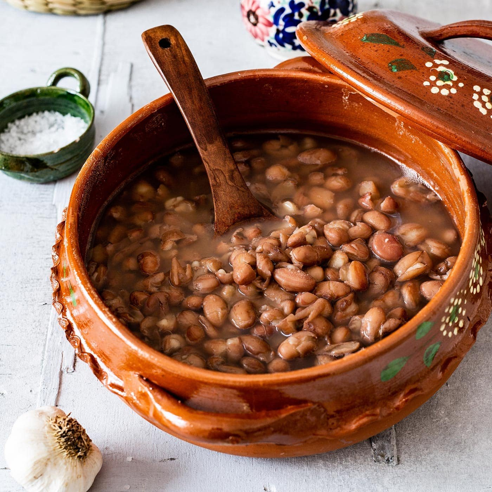

Mexican Pot Beans
←Back
Mexican Pot Beans

Ingredients:
- pinto beans
- bouillon or powdered chicken stock
- oil
- onion
- garlic
Steps:
- Soak beans overnight.
- Boil water.
- Drain beans.
- Cut onion in half and peel garlic.
- Add all ingredients into boiling water, except for salt/bouillon/stock powder.
- Add oil.
- Once beans are nearly ready, taste test, add seasoning to preference.